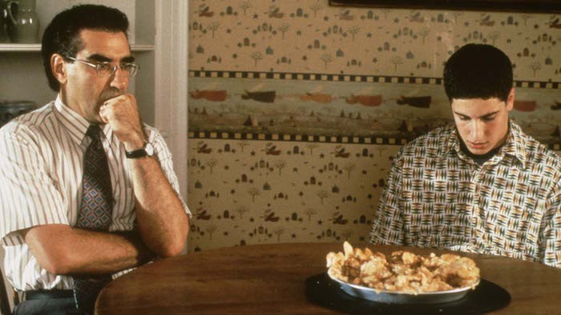

Apple pie recipe

Description
This is a sweet, tart and delicious apple pie. Guaranteed to please. Be sure to use Granny Smith apples since they work the best.
Ingredients
- 1 ½ pounds Granny Smith apples
- 1 tablespoon sugar
- 1 cup sugar
- 1 cup flour
- 1 teaspoon cinnamon
- ¾ cup melted butter
- 1 egg
Steps
- Preheat oven to 350 degrees F (175 degrees C).
- Toss apples with 1 tablespoon of sugar, and pour them into a pie plate. Thoroughly mix together 1 cup of sugar with the flour, cinnamon, butter, and egg. Spread this evenly over the top of the pie.
- Bake in preheated oven until the apples have cooked and the topping is golden brown, about 40 to 45 minutes.